Presencia
La huella íntegra del origen. El cuerpo en su totalidad, detenido en un instante de creación.
Molde completo
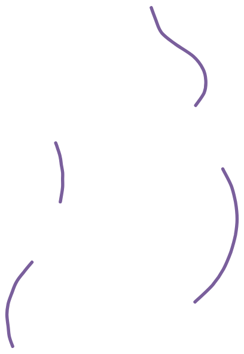
Seguro te preguntarás lo que es el bellycasting. Es una forma artística y emotiva de inmortalizar uno de los mejores momentos de la mujer. Consiste en crear un molde de escayola tridimensional del torso de la futura mamá, capturando con exactitud la curva y forma de su vientre, únicas, en esta etapa tan especial. En UKU lo hacemos en tu propio espacio, con mimo y seguridad, para ofrecerte una pieza irrepetible.
No necesitas desplazarte, será en tu propio entorno. Tú solo te relajas.
El molde de un milagro que surge del latido a la escayola. Una obra de autor que captura la curva más hermosa de tu vida. Tu cuerpo, tu historia.
Trabajamos con materiales de origen natural que protegen tu piel y son totalmente inertes. Cada relieve queda inmortalizado con un suave protocolo de desmolde que garantiza seguridad y realismo.
Un recuerdo físico de un momento irrepetible de tu vida.
Allí donde queda la «huella de vida»… El rastro inicial.
Los moldes en escayola no buscan simplemente replicar la anatomía del cuerpo, sino capturar el instante preciso donde la piel se vuelve frontera entre dos mundos.
El objetivo de cada molde es sugerir ideas como base de la obra artística y una invitación a reflexionar sobre la memoria del cuerpo:
La huella íntegra del origen. El cuerpo en su totalidad, detenido en un instante de creación.
Molde completo
La forma atravesada por lo invisible. Lo que cambia cuando la luz entra en lo íntimo.
Molde con luz
Donde el origen florece. Una forma que sostiene vida, incluso después del instante.
Florero
Lo que fue parte y sigue siendo totalidad. Unión de materia y memoria en una sola superficie.
Medio molde cosido al lienzo
Para el arte que habita donde encuentra su alma… haz que ese sitio, sea tu hogar.
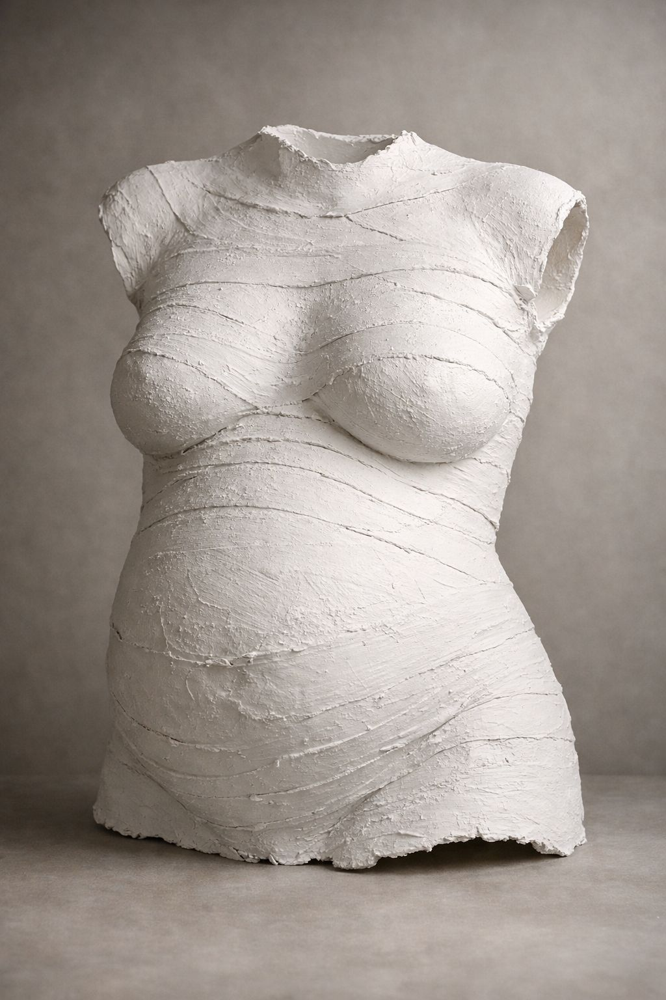
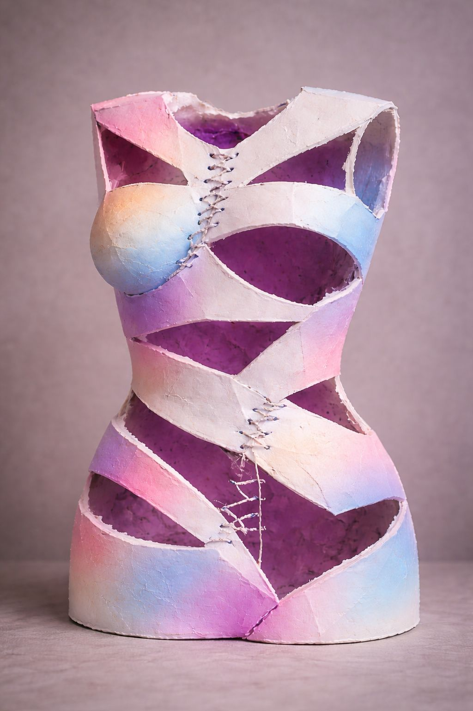
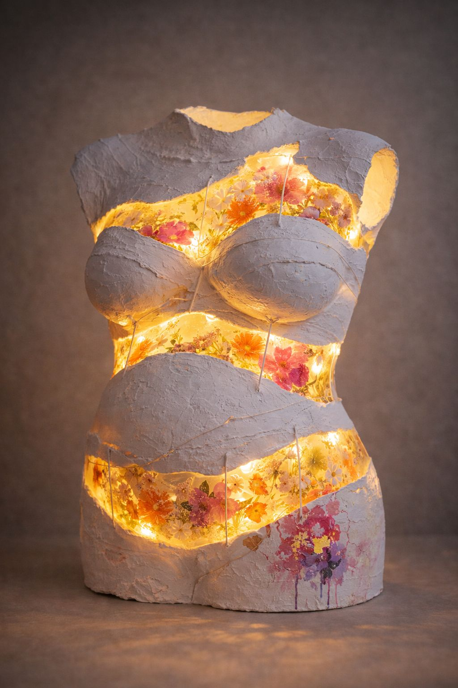
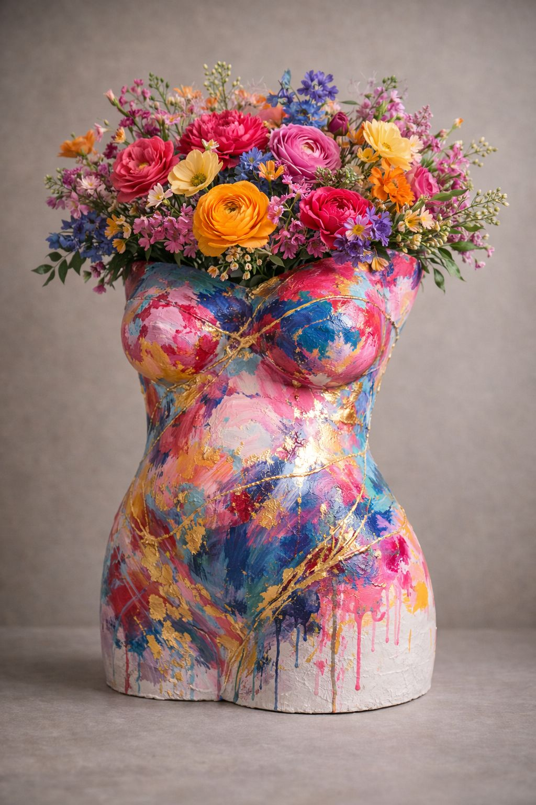
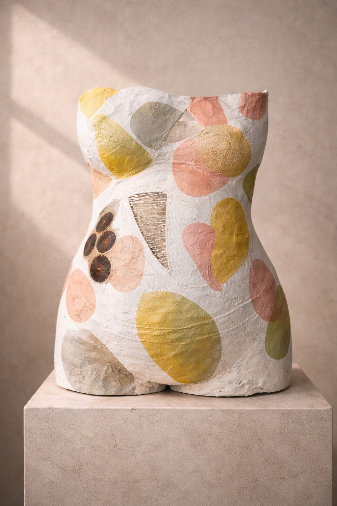
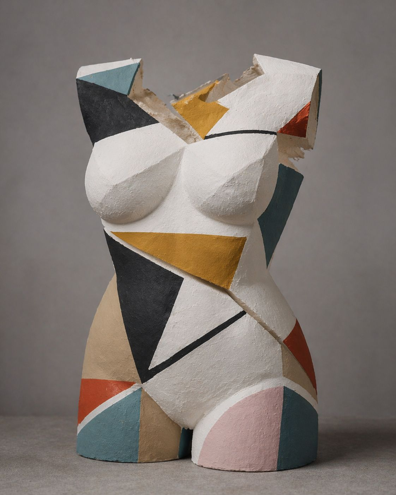
Cuidando tu cuerpo como la obra de arte que es. El objetivo es que vivas esta experiencia como un momento de conexión y relax, sin prisas y en tu propio entorno. Aquí te explicamos paso a paso cómo transformaremos tu momento en arte.
Para que te sientas totalmente cómoda, realizaremos la sesión en el rincón de tu casa donde más a gusto estés. Tú solo te relajas y disfrutas del momento.
Antes de comenzar, aplicaremos una capa de crema hidratante o aceite protector sobre tu barriguita (y pecho, si así lo deseas). Nutre tu piel y garantiza que el molde se despegue con total suavidad y sin molestias al finalizar.
Iremos aplicando suavemente vendas de escayola humedecidas que se irán adaptando a tu cuerpo. Es una sensación fresca y reconfortante. Durante este tiempo podrás estar sentada o semi-reclinada, charlando o escuchando música mientras el material toma forma.
Tras unos 15-20 minutos, una vez la escayola haya endurecido ligeramente, retiraremos la pieza con mucho cuidado. ¡Es el momento más emocionante! Verás por primera vez el relieve real de tu embarazo.
Retirados los restos de crema y tras un breve secado total, ya tenemos el alma de la pieza. Ahora solo falta darle vida con el pincel.
El alma sale del molde siempre igual y nunca acaba igual. Aquí puedes ver en qué se convierte: cada acabado se decide contigo y ninguna pieza se repite.
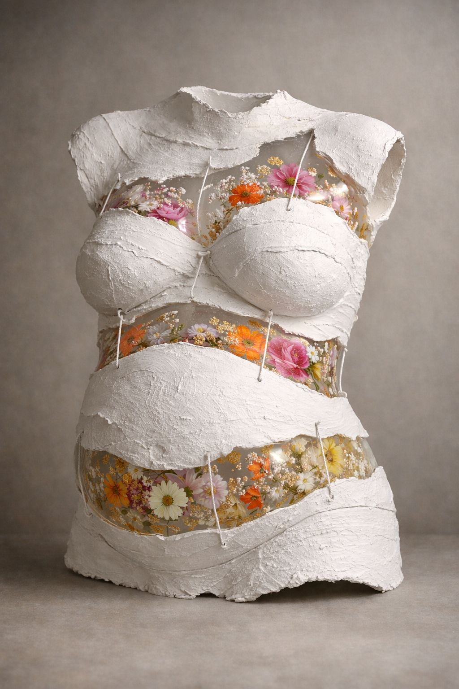
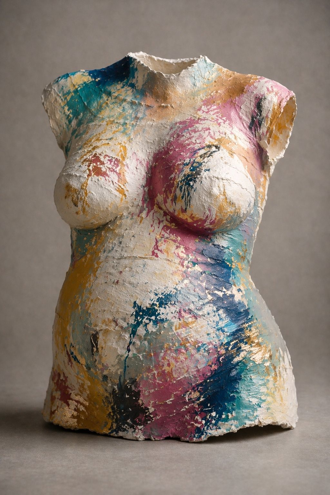
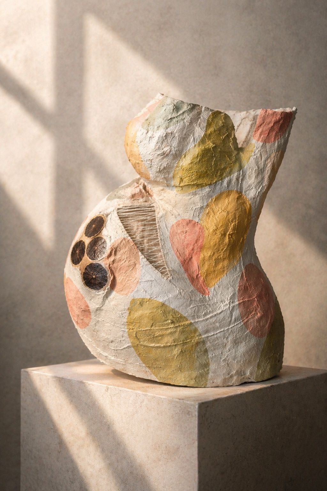
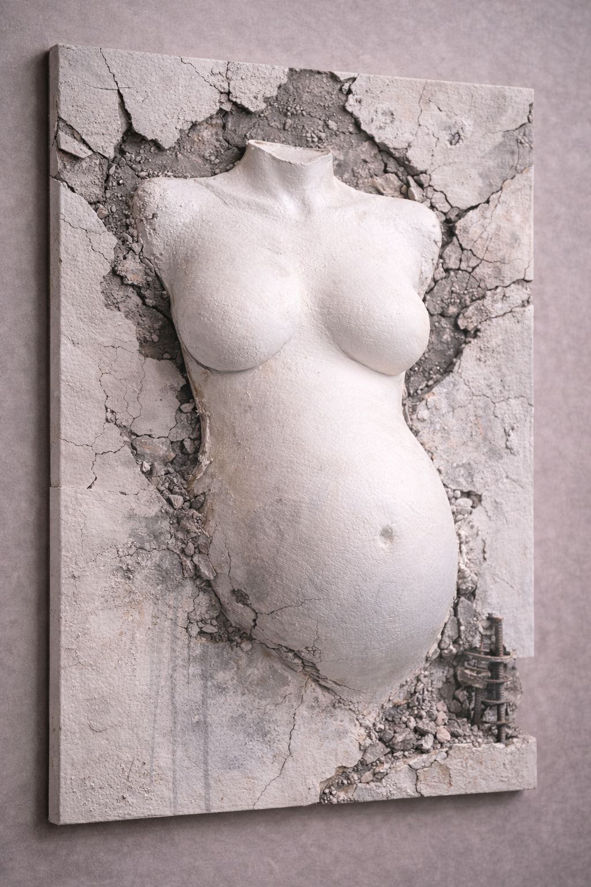
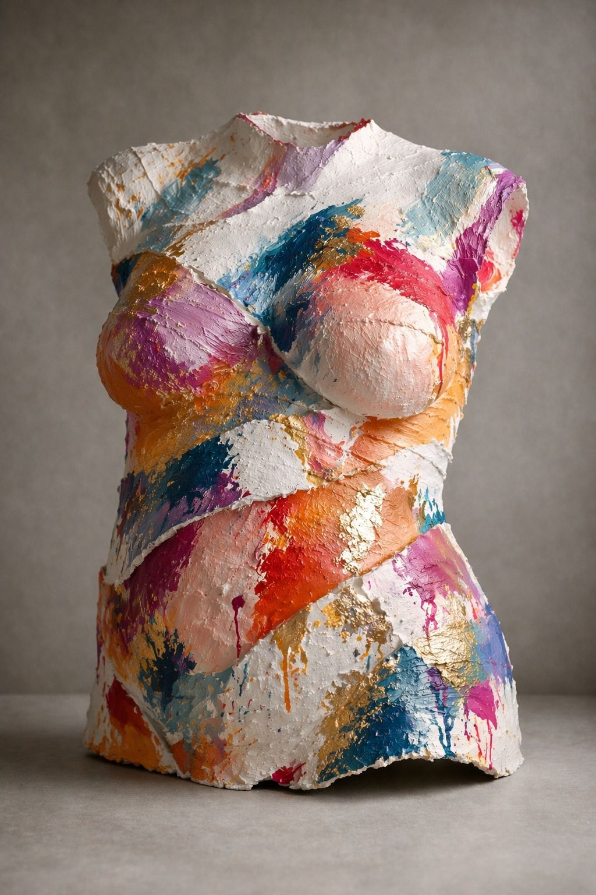
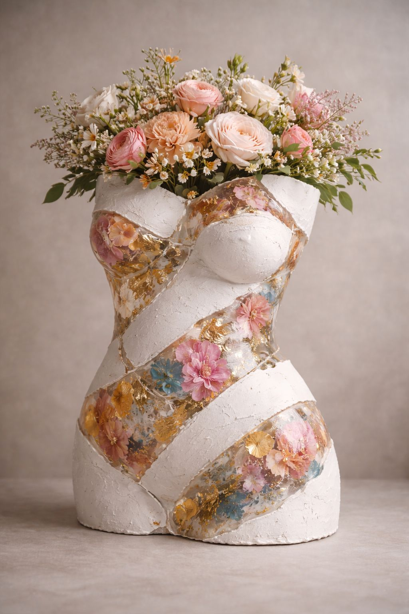
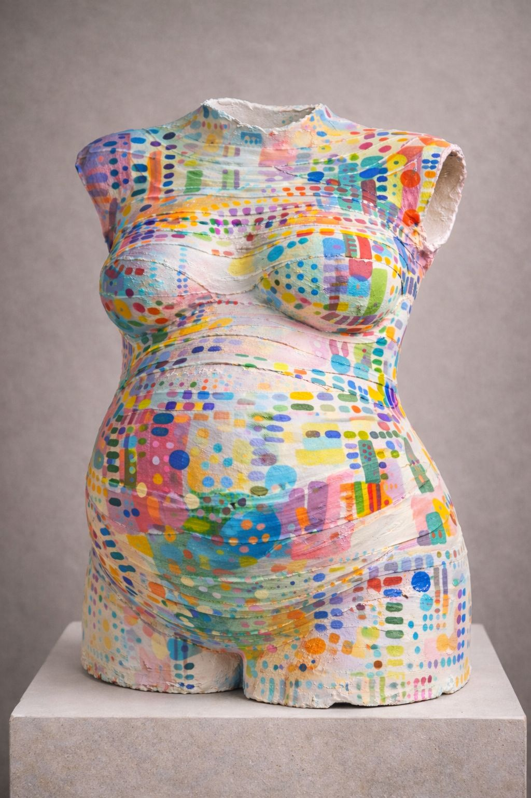
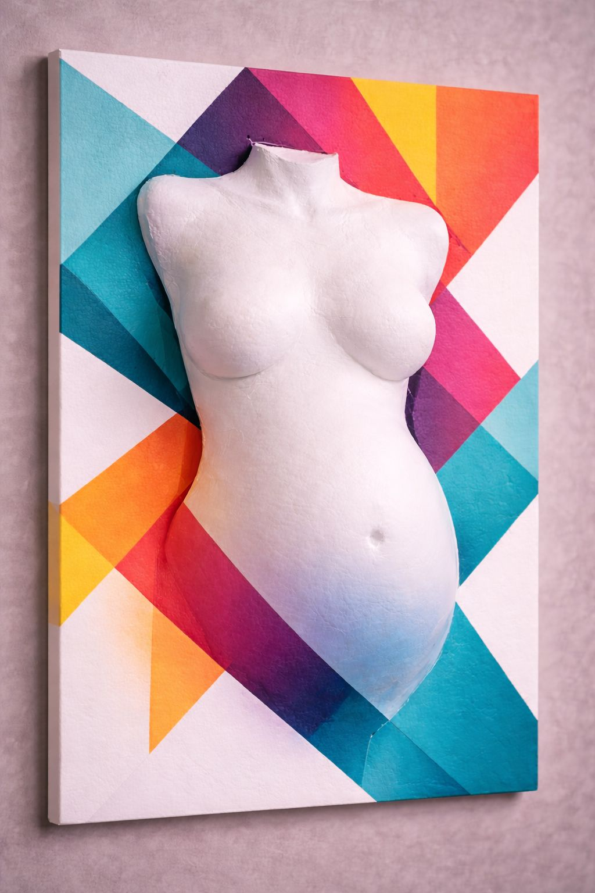
Artista visual y madre.
Como artista, trabajo con aquello que transforma, con lo que renace, desde el cuerpo hacia todo lo que no se ve.
Como mujer, siempre supe — lo que más tarde logré entender como madre — que "es el cuerpo el propio origen", ese espacio donde la vida sucede antes de poder nombrarse.
«UKU» es una palabra que viaja desde el quechua, atravesando mis orígenes y enredándose en mis raíces argentinas. Significa interior, profundidad, lo que permanece oculto y, aún así, lo sostiene todo.
Interior. Profundidad. Origen.
«Uku», en quechua, nombra lo que no se ve pero está sucediendo.
UKU está en el límite entre cuerpo y transformación, entre lo que eres y lo que está naciendo.
No es un molde. Es un umbral.
No es recuerdo. Es presencia.
UKU es lo que queda cuando lo invisible decide hacerse forma.
Entre la semana 32 y la 38 la tripita está bien formada. No obstante, cada mujer debería elegir el momento de su embarazo en el que desea dejar esa huella.
No duele en absoluto. Se siente una sensación templada y agradable mientras la escayola fragua. Los materiales son dermatológicos, libres de tóxicos y totalmente seguros tanto para ti como para el bebé.
No. Trabajamos siempre con cuidado y, al terminar, el espacio queda como estaba 😉
Aproximadamente 90 minutos. Incluye preparación, toma del molde, desmolde y recogida. Es un ratito tranquilo; puedes invitar a tu pareja o a alguien de confianza si te apetece.
El acabado artesanal lleva su tiempo. La pieza terminada se entrega en 3 o 4 semanas tras la sesión. Si la necesitas antes (regalos, baby shower…) coméntanoslo y lo organizamos.
Sí. Atendemos toda la Comunidad de Madrid. En Pozuelo, Aravaca, Boadilla, Majadahonda y Madrid capital el desplazamiento va incluido; en otras zonas aplicamos una pequeña tarifa según distancia.
Por supuesto. Antes de la sesión podemos sugerirte acabados (mate, satinado, pan de oro, flores secas, pátinas…) para que elijas el que mejor encaje con tu casa.
Si prefieres hacerlo por WhatsApp, puedes hacerlo. Cuéntanos tu semana de embarazo, tu zona y cómo te imaginas la pieza. Te respondemos en menos de 24 horas.
Escríbenos por WhatsApp